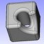
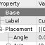
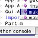
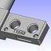
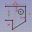
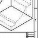
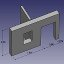
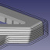
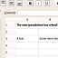

Feature list/zh-cn
这是一个庞大的，未完成的，FreeCAD 特性列表。
版本说明
- 版本 1.2 - 开发版本，每周构建
- 版本 1.1 - 2026年3月
- 版本 1.0 - 2024年11月
- 版本 0.21 - 2023年8月
- 版本 0.20 - 2022年6月
- 版本 0.19 - 2021年3月
- 版本 0.18 - 2019年3月
- 版本 0.17 - 2018年4月
- 版本 0.16 - 2016年4月
- 版本 0.15 - 2015年3月
- 版本 0.14 - 2014年3月
- 版本 0.13 - 2013年1月
- 版本 0.12 - 2011年12月
- 版本 0.11 - 2011年3月
关键特性









{kind=link}
{kind=link}
{kind=link}
{kind=link}
{kind=link}
{kind=link}
{kind=link}
{kind=link}
{kind=link}
一般特性
- 跨平台- FreeCAD 在 Windows、Linux 和 macOS 以及其他平台上的运行和表现完全一致.
- 图形化界面 - FreeCAD 基于Qt 框架的构建所有用户界面，并使用基于Open Inventor 的 3D 查看器，可以快速渲染 3D 场景和易于理解的场景图形显示。
- 可以作为命令行程序运行 - 在命令行模式运行时，FreeCAD 没有界面，但拥有所有的几何工具。可以应用于一些需要更低内存占用的场景下，例如：作为服务器为其它应用程序生产内容。
- 能作为Python 模块引用 - FreeCAD 可以导入到其它能运行 Python 脚本的应用程序中或在 Python 控制台中。类似命令行模式，FreeCAD 的界面没有加载，但所有几何工具都可以使用。
- 工作台理念：在 FreeCAD 界面里，工具由 工作台 进行分组。界面上仅显示与当前任务相关的工具组，保持工作区的整洁和响应速度，且应用程序可以更快加载。
- 延迟加载 功能/数据类型 的 插件/模块 框架。FreeCAD 被分为核心应用程序与模块/工作区，模块仅在需要时才会被加载。几乎所有工具和几何类型均被存储在工作区中。工作区类似于插件，采用延迟加载模式，并且可以从 FreeCAD 中增加或删除。
- 参数化关联文档对象. FreeCAD 文档中的所有对象均可通过参数定义。这些参数可以随时修改并重新计算。由于维护了对象关系，修改一个对象将自动传播到任何依赖对象。
- 参数化原型创建 (长方体、球体、 圆柱体、等等)
- 图形修改操作. FreeCAD 可以在3D空间的任意平面中执行平移、旋转、缩放、镜像、偏移（无论是常规偏移还是如 Jung/Shin/Choi 所述的方法）或形状转换操作。
- 构造实体几何（布尔运算）. FreeCAD 可以进行构造实体几何运算（合并、差集、交集）。
- 平面几何图形的图形化创建. 可以在3D空间的任意平面中图形化创建直线、线段、矩形、B样条曲线以及圆弧或椭圆弧。
- 通过拉伸或旋转、截面和圆角进行建模。
- 拓扑组件如顶点、边、线框和平面。
- 测试与修复. FreeCAD 拥有用于测试网格的工具（实体测试、非二流形测试、自交测试）以及修复网格的工具（孔洞填充、统一方向）。
- 注释. FreeCAD 可以插入文本或尺寸标注。
- 撤销/重做框架. FreeCAD 中的所有操作均可撤销/重做，用户可以访问撤销栈。可以一次撤销多个步骤。
- 事务导向. 撤销/重做栈存储的是文档事务，而非单个操作，允许每个工具精确定义需要撤销或重做的内容。
- 内置脚本框架. FreeCAD 内置了一个 Python 解释器，其 API 几乎涵盖应用程序的任何部分，包括界面、几何体及其在3D查看器中的表示。该解释器可以运行复杂脚本，也可以执行单条命令；整个工作台都可以完全用Python编程实现。
- 内置Python控制台. Python解释器包含一个具有语法高亮、自动补全和类浏览器的控制台。可以在FreeCAD中直接输入Python命令并立即返回结果，使脚本编写者能够即时测试功能，探索FreeCAD模块和工作台的内容，并轻松了解FreeCAD的内部机制。
- 用户和终端交互: 所有用户的 FreeCAD 的操作都执行了 python 代码。这些代码都可以在终端中打印出来和记录为宏。
- 完全的记录和编辑宏: 当用户操作时发出 python 命令，这些命令都可以记录，编辑和保存。
- (ZIP压缩的)文件保存格式: FreeCAD 文档以 .fcstd 为扩展名，可以包含多种信息类型，如几何形状信息，脚本以及缩略图图标。这个 .fcstd 文件本身是 ZIP 文档，所以 FreeCAD 文件已经被压缩了。
- 完全个性化／脚本化的图形界面。基于 Qt 的 FreeCAD 的界面完全可以使用 Python 解释器调用。不但 FreeCAD 自己提供的 workbench 函数可以用 Python 调用，Qt 的界面部分也可以调用，例如创建，添加，修改，删除小工具和工具栏。
- 缩略图 (当前仅 Linux 系统版本有): FreeCAD 文档的图标可以在大多数文档管理器中显示文档的缩略图，例如 Gnome 的 Nautilus。
- MSI 安装器 可以方便 Windows 系统安装 FreeCAD。 Ubuntu 系统上的包也在维护中。
Extra Workbenches
额外的工作台
高级用户们已经创建了大量的自定义 外部工作台.
- Getting started
- Installation: Download, Windows, Linux, Mac, Additional components, Docker, AppImage, Ubuntu Snap
- Basics: About FreeCAD, Interface, Mouse navigation, Selection methods, Object name, Preferences, Workbenches, Document structure, Properties, Help FreeCAD, Donate
- Help: Tutorials, Video tutorials
- Workbenches: Std Base, Assembly, BIM, CAM, Draft, FEM, Inspection, Material, Mesh, OpenSCAD, Part, PartDesign, Points, Reverse Engineering, Robot, Sketcher, Spreadsheet, Surface, TechDraw, Test Framework
- Hubs: User hub, Power users hub, Developer hub